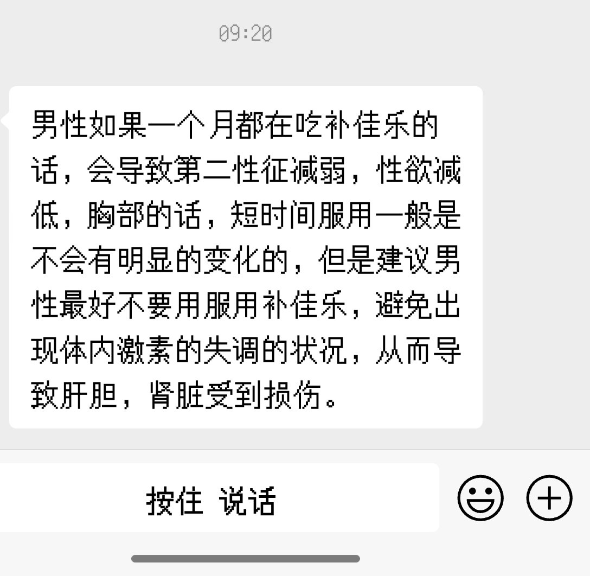

又开始了又开始了 他妈的
我爸现在没事就翻我抽屉 然后又开始说 我给你发的这个药的副作用你看没看啊 我妈还在旁边附和说你别乱吃药吓我们啊 不是我说白了 以前没见他们这么关心我 骂我的时候也没见他们考虑后果 这下知道我可能想重开地球online账号了 开始hrt了 怕我死了 又开始假惺惺的关心了 我现在这样不就是他们弄的吗 这不是你们最想看到的结果吗
凭什么现在又开始在这唉声叹气 神经病

我爸现在没事就翻我抽屉 然后又开始说 我给你发的这个药的副作用你看没看啊 我妈还在旁边附和说你别乱吃药吓我们啊 不是我说白了 以前没见他们这么关心我 骂我的时候也没见他们考虑后果 这下知道我可能想重开地球online账号了 开始hrt了 怕我死了 又开始假惺惺的关心了 我现在这样不就是他们弄的吗 这不是你们最想看到的结果吗
凭什么现在又开始在这唉声叹气 神经病

你妈的我就睡个觉的功夫我跟我爸怎么也炸柜了啊啊啊啊啊 这种事情补药啊！！😭😭😭
后续就是 丢给我一段不知道从哪复制过来的文案 老实了 这下跟全家都炸柜了😂 https://t.co/kzlcXXYd3f
后续就是 丢给我一段不知道从哪复制过来的文案 老实了 这下跟全家都炸柜了😂 https://t.co/kzlcXXYd3f